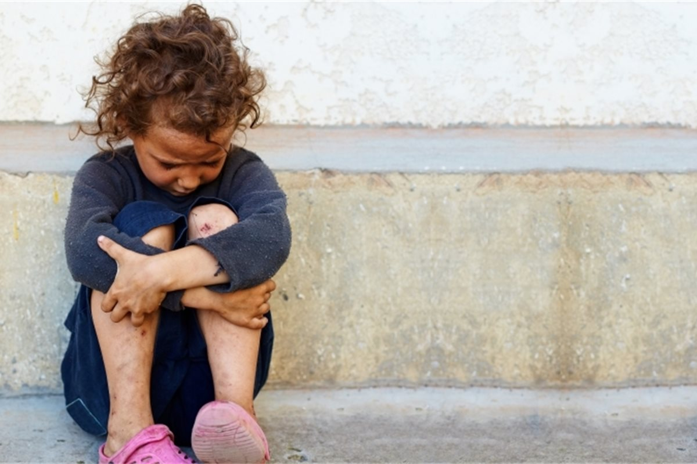

According to a new independent report, the cost of child poverty has skyrocketed among conservatives over the past eight years and is now 38 billion pounds annually. The results will be released in the coming days, with lawmakers from all parties expressing concern that cuts will reduce low incomes, ending the weekly increase in general loans by 20 pounds. Concerns about the plan will increase. Families with children will be particularly hit. A new study by Professor Donald Hirsch of Loughborough University is the third of his kind of studies in the last 15 years. According to the latest study by Hirsch, the total cost of fighting child poverty has increased by 8 billion pounds since 2013. After considering inflation, workers said the cost was about 4 billion pounds in real terms, despite repeated claims that the government reduced child poverty. According to the study by Hirsch, the increase in cost is determined by four major variables. Income and allowances; general amount of public spending. Specific measures to direct public spending on children in low-income households. In response to the Shadowchild Poverty Secretary Wes Streeting, who commissioned the survey, announced that workers would establish a new child poverty reduction unit at number 10 when the party came to power. Kiel Starmer has seen a significant number of children alive since 2010 when the Treasury arrived. Require units to adopt an intergovernmental strategy to address the increase. Rising costs for reverse offices and the Treasury. Streeting said: Labor will prevent children from falling into the Tory poverty trap and increase the chances of those denied it. Professor Hirsch said: Growing up in a damp or crowded house, you can't adequately measure the cost of relying on charity to bring food to a table or to wear shabby, frugal clothes to school. However, in addition to labor costs, research shows that child poverty puts enormous financial costs on finances and the economy."
